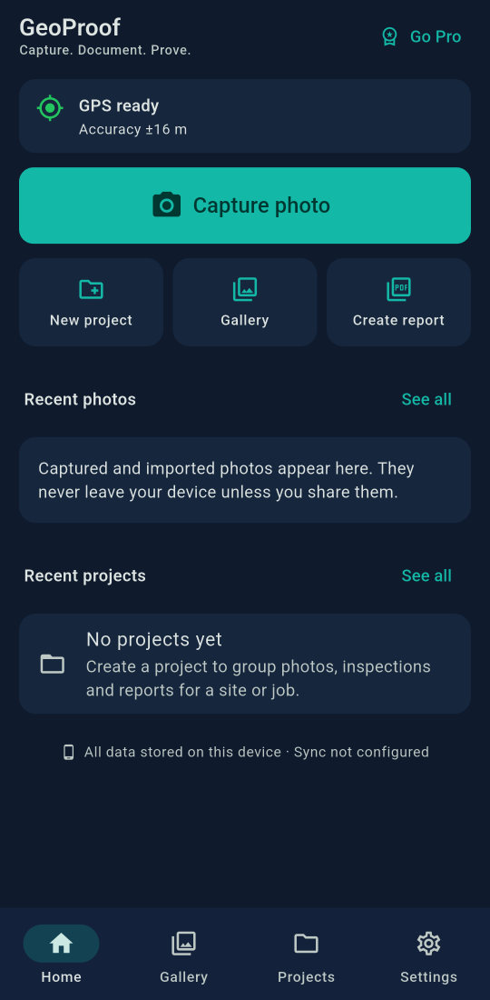
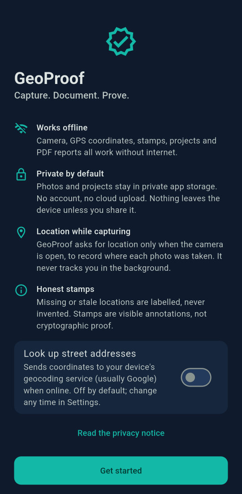
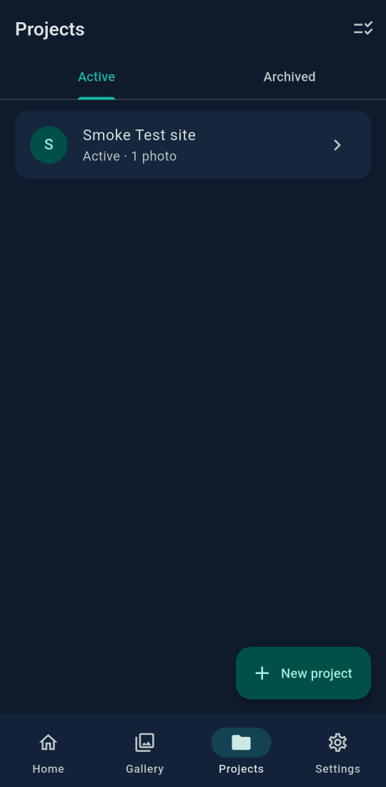
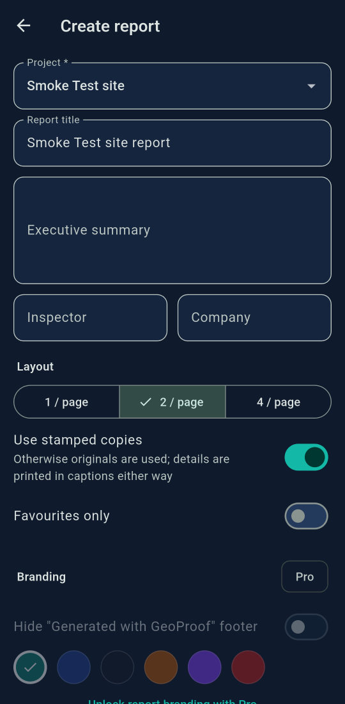

GPS camera with live stamp
See the stamp before you shoot. Time with time zone, coordinates in decimal, DMS or DDM, accuracy, altitude and compass direction.
GeoProof stamps every photo with its capture time, coordinates and accuracy, then organises your evidence into projects, inspection checklists and clean PDF reports. Everything works without internet, and nothing leaves your phone unless you share it.

Built for property inspectors, maintenance crews, builders and anyone who has to prove the work was done.
See the stamp before you shoot. Time with time zone, coordinates in decimal, DMS or DDM, accuracy, altitude and compass direction.
Group photos by site or job, record visits, keep notes and an activity log. Save the site's location with one tap.
Property, maintenance, construction and general templates. A completeness check flags unchecked items, missing photos and open issues.
Summary, checklist table, before/after pairs and photos at 1, 2 or 4 per page. Telugu and other scripts render correctly.
The stamp goes on a separate copy. Your original stays byte-for-byte as the camera saved it, with a SHA-256 fingerprint.
Capture, stamps, projects and reports all work offline. Photos survive the app being closed mid-capture.
Screens from the Android app.



A stamp is only useful if people can trust it. GeoProof never fills gaps with guesses.
Example values for illustration.
No subscriptions, no in-app purchases, no ads and no account. Every feature is included.
GeoProof has no servers that receive your data. Photos, locations and reports live in the app's private storage on your phone. The optional street-address lookup is off until you turn it on. Read the full Privacy Policy.